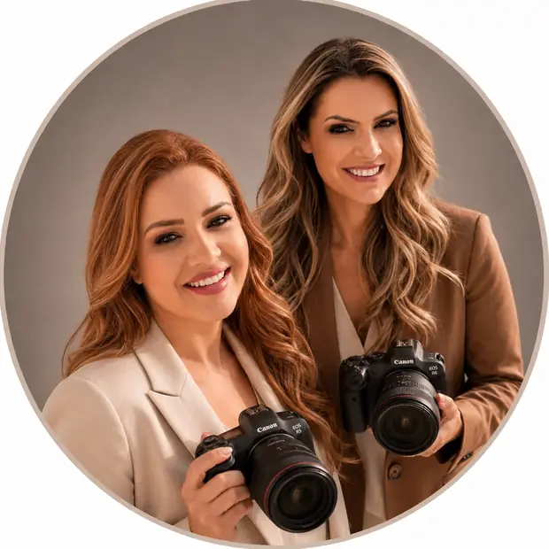

We're Alline Moltocaro Ribeiro and Quenia Mara Moltocaro, photographers based in Curitiba, Brazil, passionate about weddings that go beyond the ordinary. AQ Studio & Co. was born from our desire to combine two things we love: fine art wedding photography and the — often complicated — logistics of marrying far from home.
We specialize in destination weddings: in Italy, across Europe, and in special corners of Brazil. Beyond photography, we curate every detail — recommending the right vendors, understanding local requirements, and translating the destination's culture for the couple.
Every session is guided by natural direction: no forced poses, no rush. The result is editorial imagery that carries the day's real emotion — meant to be revisited for generations.
We photograph what really happens — no staging, with subtle direction that preserves spontaneity.
One couple per date. Full attention, from first contact to album delivery.
We only recommend vendors we've tested and trust, at every destination we serve.
An editorial, timeless look that doesn't chase passing trends.
Clear processes, agreed timelines and direct communication at every step.
Even thousands of miles away, you always know exactly who you're talking to.